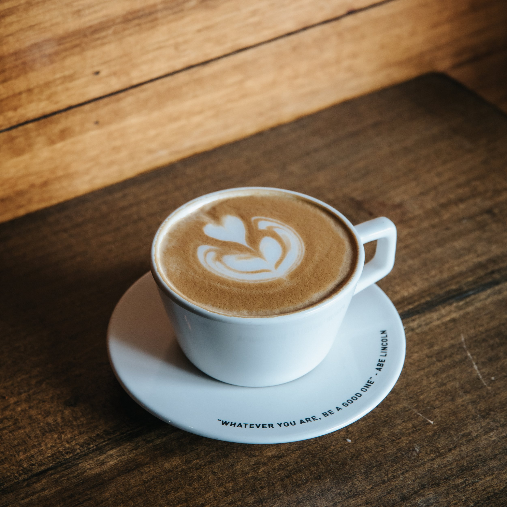

Coffee: My Daily Comfort!
Coffee is a popular beverage made from the roasted beans of the Coffea plant. It is known for its rich aroma, bold flavor, and stimulating effects due to caffeine, a natural stimulant that helps increase alertness and energy levels. Coffee is prepared by brewing ground coffee beans with hot water, extracting their flavor and essential oils. It comes in various forms, including espresso, cappuccino, latte, and black coffee, each offering a unique taste and experience. Aside from being a daily ritual for many, coffee has cultural significance worldwide, often enjoyed in social settings, cafés, and as a personal morning ritual.
Why I Love Coffee?
I love coffee because it’s the perfect blend of rich aroma, bold flavor, and comforting warmth that fuels my day. Whether it’s the first sip in the morning that wakes me up or an afternoon cup that keeps me going, coffee is more than just a drink—it’s an experience. The smooth, slightly bitter taste combined with the right amount of cream or sugar creates a balance that feels both energizing and indulgent. Beyond its flavor, coffee provides a sense of routine and relaxation, giving me a moment to pause and enjoy something simple yet satisfying. Plus, the caffeine boost helps me stay focused and productive, making it an essential part of my daily life.
Please check out my favorite coffee place right now: Club House Cafe
How Did Coffee Change My Life?
Coffee has changed my life by becoming more than just a drink—it’s a daily ritual that fuels my energy, sharpens my focus, and brings comfort to my routine. It has helped me stay alert during long study or work sessions, giving me the boost I need to stay productive. Beyond its effects, coffee has also become a source of relaxation, allowing me to take a moment to unwind and enjoy its rich aroma and bold flavor. Whether it’s starting my mornings with a warm cup or sharing a coffee break with friends, this simple yet powerful drink has added both structure and joy to my everyday life.